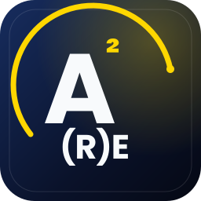

A rota oferece um ponto de partida comum, práticas observáveis e critérios para decidir o que ampliar.
Sem custo · 1 turma por mês · primeira semana
Rota Nível 0 · O ponto de entrada
IA com controle.
Adotar ferramentas sem linguagem compartilhada aumenta variabilidade, risco e trabalho difícil de auditar.
Triplo zero para começar
0CustoOficinas gratuitas
0FricçãoPasso a passo, sem perfil técnico
0Risco de entradaPrática guiada; o critério continua sendo seu
- Sem custo
- 1 turma por mês · primeira semana
- Máximo de 25 pessoas por ciclo
- Blocos de 90–120 minutos
Selecione um fluxo limitado, atribua responsável, autorize fontes e estabeleça revisão humana.
Registre origem, decisão, controle, responsável e resultado antes de ampliar o uso.
Antes de adicionar outra ferramenta
Você já tem IA. Ela está realmente ajudando?
Reconheça onde você está hoje. Não há respostas certas, apenas um ponto de partida. Sua seleção não é salva nem enviada.
Uma progressão cumulativa
Quatro aulas. Uma nova forma de avançar.
Primeiro você entende. Depois escolhe. Em seguida amplifica. No final, aprende a delegar sem perder o controle.
CompreenderDisponível
IA: o que está acontecendo e como aproveitar
A IA já está mudando seu trabalho. A diferença está em usá-la com intenção ou apenas reagir a ela.
Como aprendo com IA sem confundir uma resposta convincente com uma resposta confiável?
- Pré-requisito
- Curiosidade e uso básico de chat
- Prática
- Construir e auditar uma base no NotebookLM
- Evidência
- Propósito, fontes decisivas, lacuna aceita e veredito
O que você leva
Você não precisa saber tudo. Precisa fazer perguntas melhores, trabalhar com fontes e saber quando verificar.
Primeiro entenda. Depois aproveite.
→ Com melhor contexto, você poderá escolher o que merece seu tempo
PriorizarDisponível
De ocupado a produtivo
Sua agenda não precisa de mais velocidade. Precisa de direção.
Como transformo tudo o que tenho para fazer em prioridades que consigo sustentar?
- Pré-requisito
- Compreender fontes, limites e propósito
- Prática
- Criar uma agenda protegida e um sistema visível de prioridades
- Evidência
- Três prioridades justificadas, blocos protegidos e revisão com evidência
O que você leva
Priorizar é decidir o que merece sua energia antes de pedir que a IA faça mais.
Não faça mais. Faça avançar o que importa.
Vídeo abertoDe ocupado a produtivoAssistir no YouTube→ Com prioridades claras, você poderá criar um fluxo que amplifique seu trabalho
AmplificarDisponível
Trabalho amplificado
A IA deixa de ser outra janela aberta e passa a fazer parte de uma forma de trabalhar.
Como conecto aprendizagem, critério e execução em um fluxo que posso repetir e melhorar?
- Pré-requisito
- Propósito e prioridades explícitas
- Prática
- Transformar um trabalho real em fluxo repetível com IA e revisão humana
- Evidência
- Fluxo documentado com entradas, decisões, controles e resultado observável
O que você leva
Amplificar é conectar critério, método e ferramentas em torno de um resultado real.
Menos improvisação. Mais capacidade.
→ Quando o fluxo estiver claro, você poderá delegar alguns passos com supervisão
OrquestrarDisponível
Trabalho agêntico
Quando você conhece bem um fluxo, pode delegar passos sem delegar a responsabilidade.
Como desenho autonomia útil sem perder visibilidade, limites ou controle?
- Pré-requisito
- Um fluxo conhecido e verificável
- Prática
- Desenhar um primeiro fluxo agêntico com papéis, ferramentas, permissões e supervisão
- Evidência
- Plano de execução com gates, exceções, rastreabilidade e decisão humana final
O que você leva
Um agente útil precisa de propósito, ferramentas, limites, evidência e uma pessoa que supervisione.
A autonomia começa pelo desenho da supervisão.
→ A partir daqui começam a prática autônoma e as rotas avançadas
A metodologia em ação
Assim se aprende com critério.
Você não busca uma resposta rápida. Constrói uma base, coloca-a à prova e decide o que pode usar com confiança.
- 01Defina um propósito
- 02Selecione fontes
- 03Audite tensões e lacunas
- 04Decida se a base é suficiente
- 05Ative professor, assessor ou coach
- 06Explique e transfira
Experimente antes de se inscrever
Você não precisa acreditar apenas no que dizemos. Experimente.
Abra a primeira aula e seu workbook. Percorra o método por conta própria antes de decidir se quer vivê-lo acompanhado.
Masterclass · Gravação completaYouTube · MetodologIA
IA: o que está acontecendo e como aproveitar
Assista à sessão completa e percorra o ponto de partida da Rota Nível 0 com método, contexto e critério.
Ver masterclassIntrodução · Vídeo gerado com IAYouTube · MetodologIADe usar IA a dirigir tecnologia
Uma introdução breve à promessa da rota antes de entrar na masterclass completa.
Ver introduçãoPlaybook · MetodologIA
Aprender. Apreender. (R)Evoluir.
Um método para transformar informação em critério, prática e conhecimento que você consegue explicar.
Iniciar método Skill canônica · Método aberto
Skill canônica · Método abertoAprender · Apreender · (R)Evoluir
Opera o método com você: direciona fases, prompts, workflows e verificações sem confundir respostas fluentes com evidência.
Usar skillMapa dos 16 entregáveis16
Disponíveis: quatro módulos completos. Cada um inclui Masterclass, workbook, playbook e biblioteca de prompts.
IA: o que está acontecendo e como aproveitar
Rota Nível 0/Aula 01/MasterclassIA: o que está acontecendo e como aproveitarDisponível →Rota Nível 0/Aula 01/WorkbookAprenda a aprender com NotebookLMDisponível →Rota Nível 0/Aula 01/PlaybookDe fontes à aprendizagem contínuaDisponível →Rota Nível 0/Aula 01/Biblioteca de promptsAprenda, pesquise e compreenda com IADisponível →
De ocupado a produtivo
Rota Nível 0/Aula 02/MasterclassDe ocupado a produtivoDisponível →Rota Nível 0/Aula 02/WorkbookTransforme prioridades em um sistemaDisponível →Rota Nível 0/Aula 02/PlaybookSua pauta de produtividade com IADisponível →Rota Nível 0/Aula 02/Biblioteca de promptsPlaneje, priorize e acompanheDisponível →
Trabalho amplificado
Rota Nível 0/Aula 03/MasterclassTrabalho amplificadoDisponível →Rota Nível 0/Aula 03/WorkbookProjete seu fluxo de trabalho amplificadoDisponível →Rota Nível 0/Aula 03/PlaybookMétodo para amplificar o que você fazDisponível →Rota Nível 0/Aula 03/Biblioteca de promptsAcelere, melhore e sistematize seu trabalhoDisponível →
Trabalho agêntico
Rota Nível 0/Aula 04/MasterclassTrabalho agênticoDisponível →Rota Nível 0/Aula 04/WorkbookProjete seu primeiro fluxo agênticoDisponível →Rota Nível 0/Aula 04/PlaybookOrquestre agentes com supervisão humanaDisponível →Rota Nível 0/Aula 04/Biblioteca de promptsAssistentes, agentes, ferramentas e controleDisponível →
De tema a evidência
De uma pergunta a uma forma de trabalhar.
Os quatro módulos já estão disponíveis. Cada resultado continua sendo uma prática a demonstrar, não uma promessa automática.
Base confiável
Uma base orientada a propósito, com fontes revisáveis e limites explícitos.
Sistema de prioridades
Uma pauta para escolher, planejar e sustentar o que importa.
Fluxo amplificado
Trabalho real transformado em passos repetíveis, revisáveis e melhoráveis.
Fluxo agêntico supervisionado
Papéis, memória e ferramentas sob critérios e responsabilidade humana.
Ciclo de aprendizagem orgânica
Aprenda → produza evidência → explique → reutilize o modelo → compartilhe apenas um aprendizado sanitizado.
Confiança antes de espetáculo
A ferramenta muda. O método permanece.
Usamos IA para buscar, pensar e praticar melhor. A decisão, a verificação e a responsabilidade continuam sendo suas.
Prática guiada
A turma acompanha a execução; a biblioteca permanece aberta para prática autônoma.
Trabalho baseado em fontes
O NotebookLM permite consultar fontes selecionadas e revisar citações; você decide o que importar e verificar.
Privacidade explícita
Este site não salva nem envia suas respostas. A inscrição usa um serviço externo.
Transferência
Uma resposta não basta: você deve explicar o processo e usá-lo em outro contexto.
O que você precisa?
- Conta Google e navegador atualizado
- Uso básico de IA conversacional
- Um tema ou decisão real
- Disposição para revisar fontes e mudar sua forma de trabalhar
Preciso de conhecimento técnico?
Não. A rota parte do uso conversacional básico e enfatiza método e critério.
A turma é gratuita?
Sim. O formulário público atual declara workshops gratuitos e máximo de 25 pessoas por ciclo.
Devo fazer as quatro aulas?
Você pode começar pela primeira. A rota completa foi desenhada para acumular capacidades.
O que acontece com meus dados?
A landing não coleta respostas. A inscrição abre um Google Form público.
Carta dos embaixadores
Você não precisa percorrer esta rota sozinho.
Como embaixadores, não estamos aqui para fingir que temos todas as respostas. Estamos aqui para compartilhar uma prática: fazer perguntas melhores, revisar as evidências e transformar o aprendizado em algo que você possa realmente usar.
Experimente, pergunte, traga seu contexto e preserve seu critério. Uma comunidade faz sentido quando cada pessoa pode dizer com honestidade o que funcionou, o que não funcionou e o que aprendeu no caminho.
Uma nota pessoal antes de começar
Você não precisa dominar cada ferramenta. Precisa de uma forma própria de avançar.
Se você chegou até aqui, quero deixar uma ideia simples: a IA não precisa afastar você da sua maneira de pensar. Bem usada, ela pode ajudar a enxergá-la com mais clareza, colocá-la à prova e transformá-la em ação.
Criei esta Rota Nível 0 para que você possa começar sem fingir que sabe tudo. Entre com uma pergunta real, trabalhe com outras pessoas e saia com uma prática que possa repetir. O restante é construído passo a passo.
Uma turma por mês · primeira semana
Comece com uma pergunta. Saia com uma prática.
Experimente hoje os recursos abertos. Se quiser transformá-los em uma forma de trabalhar, participe de uma turma gratuita e percorra a rota com orientação.
O link abre o formulário público de inscrição em uma nova aba.
Definir primeiro caso
A capacidade aparece quando a prática é repetível, rastreável e governável.